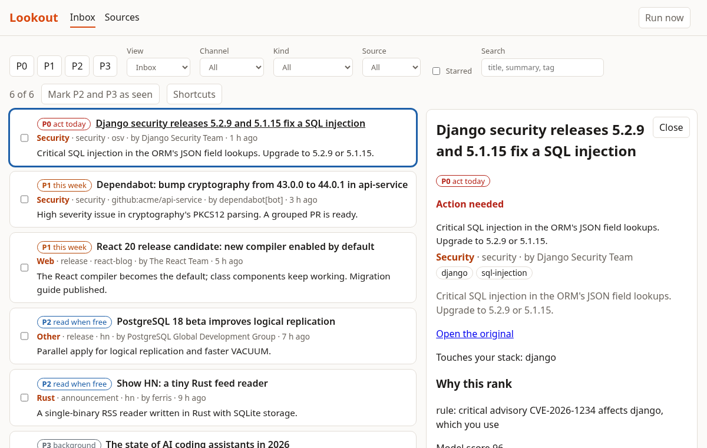
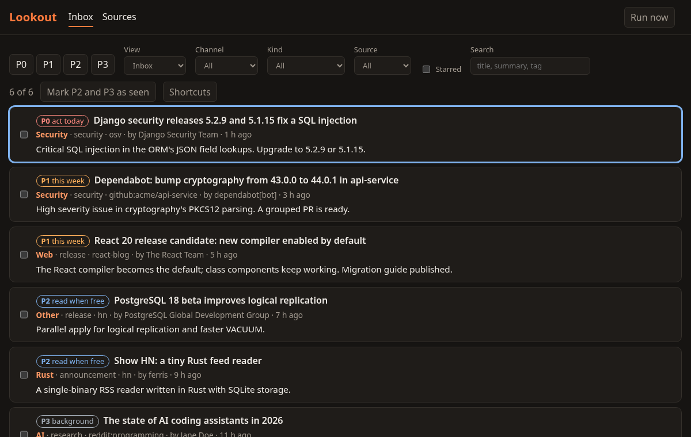

Know what needs you today.
Lookout is a self-hosted watch tower. Plug in the feeds, releases and advisories that matter to your work; a model summarises, files and prioritises each item; you work an inbox.


lookout demo).Built around trust
Rules first, model second
A critical advisory on a package you declared is never below P0, whatever the model says. Every priority shows its reason.
Text from the internet is data
A title that says "ignore previous instructions" is stored as plain text and decides nothing. This is tested in a real browser.
Any model, free to start
One OpenAI-compatible port. Run Ollama on your machine, or point it at any compatible endpoint.
It learns, and says why
Stars, finished items and dismissals reorder items inside their priority. “Why this rank” lists each contribution.
A triage inbox
New, seen, done, snoozed, dismissed. Filters in the URL, keyboard shortcuts, bulk actions, undo.
Yours
One SQLite file, one process, MIT licence. Nothing leaves your machine except the calls you configure.
Four levels of urgency
| Level | Meaning | Example |
|---|---|---|
| P0 | act today | Critical SQL injection in a library you run |
| P1 | this week | A release candidate of a framework you build on |
| P2 | read when free | A database beta with a feature you may use |
| P3 | background | A survey of the industry |
Try it in a minute
git clone https://github.com/bhoudebert/lookout && cd lookout
nix develop && just setup
cp lookout.example.yaml lookout.yaml
lookout demo && npm run --prefix frontend build
lookout serve # http://127.0.0.1:8899Sources today: any RSS or Atom feed, which already covers blogs, GitHub releases, Reddit, Hacker News and YouTube channels. Advisory and Dependabot adapters are next. See the sources.
Proven on every change
- 100% line and branch coverage on the backend, from scenarios that run real use cases.
- 100% coverage on the dashboard, plus browser journeys against the real server.
- Accessibility checks (WCAG 2 A and AA) on every screen, and a phone-width check.
- One command,
nix run .#quality, locally and in CI.